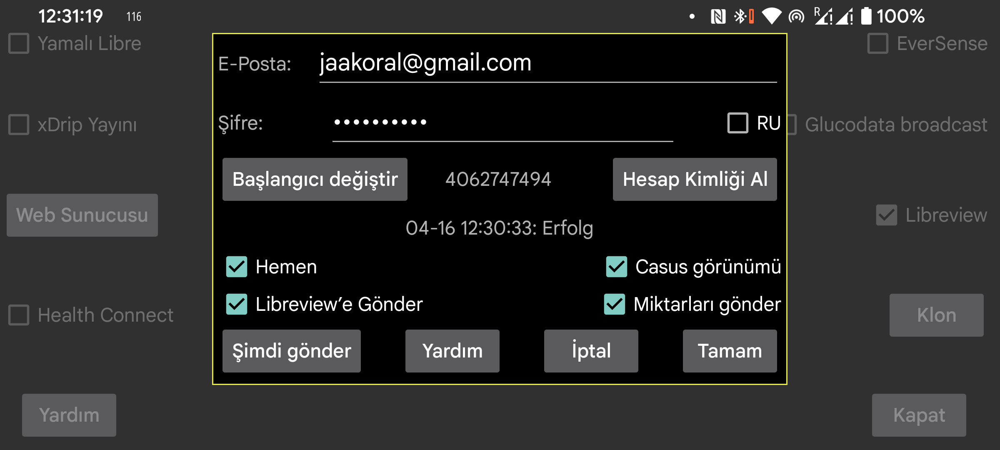

ar be de es fr hi nl pl pt ru tr uk uz zh en
Juggluco, glikoz verilerini ve miktarlarını Libreview'e gönderebilir.
Librelink uygulaması gibi, son 89 güne ait verileri Libreview'e gönderir.
Bu hizmeti kullanmak için, https://libreview.com adresinde bir Libreview hesabı oluşturmanız ve burada E-posta adresinizi ve şifrenizi belirtmeniz gerekir. Aynı dönemden gelen verileri aynı Libreview hesabına birden fazla kez göndermeyin (örneğin Librelink uygulamasından ve Juggluco'dan). Libreview'deki mevcut cihazları Hesap Ayarları > Cihazlarım'dan silebilir veya yeni bir Libreview hesabı alabilirsiniz.
Açmak için "Libreview'e Gönder" seçeneğini işaretlemeniz gerekir.
Juggluco, önceki 20 dakika içinde yapılmamışsa Juggluco'dan her ayrıldığınızda Libreview'e yeni veriler gönderecektir. Ayrıca "Şimdi gönder" tuşuna basarak manuel olarak da Libreview'e gönderebilirsiniz.
Glikoz değerlerinin yanı sıra, Miktarlar da Libreview'e gönderilebilir. Bunun için "Miktarları gönder" öğesine dokunmanız ve her etiketin ne anlama geldiğini belirtmeniz gerekir.
RU: Eğer https://libreview.com yerine https://libreview.ru kullanıyorsanız bunu ayarlamanız gerekir. Bu yalnızca Libre 2 sensörleri için geçerlidir. Libre 3 sensörleri yalnızca libreview.com ile kullanılabilir, çünkü Rusça Abbott Libre 3 uygulaması mevcut değildir.
Hemen: Glikoz değerlerini Libre 2 veya 3 sensörlerinden geldiklerinde hemen Libreview'e gönderir. Bu yalnızca LibreLinkUp ile birlikte kullanıldığında faydalıdır. Bunu kullanmak için Abbott'un Libre uygulamalarından birinde bu Libreview hesabına bir LibrelinkUp bağlantısı eklemeniz gerekir. (Ülkenizde Abbott Libre uygulaması yoksa, yamalı Libre 3 uygulamasını kullanabilirsiniz.) Bazen değer hemen görünmez, çünkü LibreLinkUp'ın görüntülenmesi otomatik olarak yeniden çizilmez. Yakından bakmazsanız LibreLinkup'ı kullanmak oldukça tehlikelidir, çünkü grafiğe dokunduğunuzda, mevcut glikoz değeri yerine eski bir değer gösterir.
Spy Views: Bu seçenek ayarlandığında, Juggluco bir değerin görüntülenip görüntülenmediğini Libreview'e gönderecektir. Bu seçenek kapatıldığında, Juggluco her zaman görüntülenmediğini söyleyecektir. Bu seçenek yalnızca Hemen seçeneği de açık olduğunda bu bilgiyi Libreview'e güvenilir bir şekilde gönderecektir. Juggluco, Libre 3'ten tüm görüntülemeleri yakalamak için sürekli olarak internete bağlı olmalıdır, Libre 2 durdurulmadığı sürece hepsini hatırlar.
Başlangıcı değiştir: Yeniden başla, belirtilen tarih ve saatten itibaren verileri yeniden gönderir. Yeni bir Libreview hesabına geçerken buna basmanız gerekir.
Libreview'e göndermeye çalıştığınız son verinin sonucu "Hesap Kimliğini Al" düğmesinin altında görüntülenir.
Libreview analizinde, geçmiş değerleri kullanır. Juggluco ise istatistik ekranı için akış değerlerini kullanır (Orta Sol Menü > İstatistikler). Bu işleyiş, Libreview ile Juggluco istatistikleri arasında küçük farklara neden olur. Akış değerleri daha uç olduğundan, Juggluco biraz daha negatiftir: aralıkta geçen süre daha az, değişkenlik daha büyük olabilir. Ayrıca “Zaman Sensörü Etkin” Juggluco'ya göre daha küçüktür; her eksik akış değerini sayar.
Juggluco aynı anda birden fazla sensörle bağlanabilirken, Librelink aynı anda yalnızca bir sensörü işler. Juggluco ayrıca Libreview'e aynı anda yalnızca bir sensörden veri gönderir. Bunu, önce bir sensörden veri göndererek ancak o sensörden veri alınamayınca, sonraki sensörden veri göndererek yapar. Juggluco sonraki sensöre geçtiğinde, Librelink'in tek sensör politikasını taklit etmek için öncekine geri dönmez. Aynı anda birden fazla sensör çalıştırdığınızda ve sonra eklenen sensör daha erken sona erdiğinde, önceki sensörün artık Libreview'e veri göndermeyeceği anlamına gelir.
Hesap Kimliği Al: LibreView hesap kimliğini almak istiyor ancak Libreview'e veri göndermek istemiyorsanız, E-posta adresinizi ve Parolanızı girebilir ve "Hesap Kimliği Al" düğmesine basabilirsiniz. Bu düğmeden önceki satırda, Hesap Kimliği gösterilecektir (bu biraz zaman alabilir ve ekran otomatik olarak yenilenmez). Hesap Kimliğini LibreView sunucusundan almak, Abbotts Libre 3 uygulamasıyla daha önce kullanılmış bir FreeStyle Libre 3 sensörünü bu LibreView hesabıyla kullanmayı mümkün kılar.
Libreview hesap kimlik numarası ayrıca Libreview raporlarının adres çubuğunda görüntülenen UUID'den dönüştürülebilir ve Juggluco'ya manuel olarak girilebilir.
Sibionics ve Dexcom sensörlerinden gelen veriler Libreview'e gönderilmez.